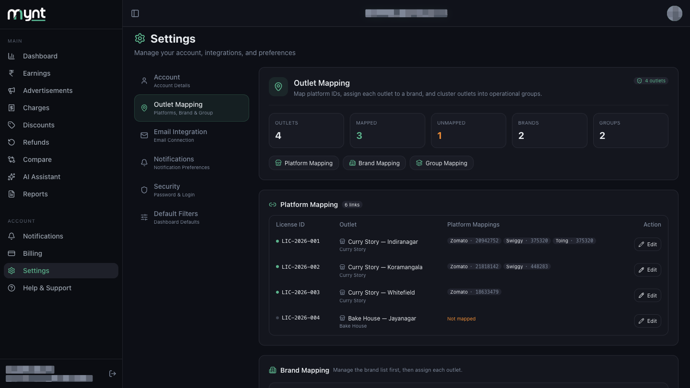
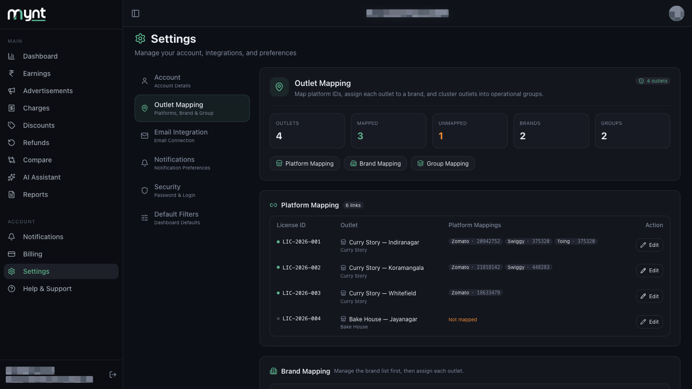
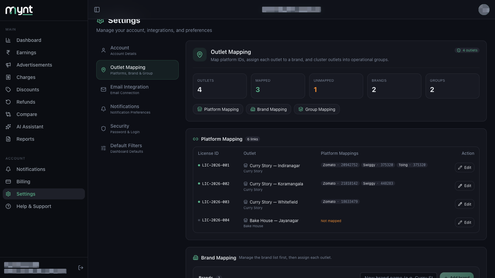

Every platform knows your outlet by a number, not by its name. Zomato might call your Indiranagar shop 20942752; Swiggy calls the same shop 375320.
Outlet mapping is where you link those numbers to the outlet in Mynt. Once linked, every payout email for that number is counted against that outlet.
| Without mapping | Payout emails arrive but Mynt cannot tell which outlet they belong to; the dashboard shows blanks or lumps everything together; reports cannot be filtered by outlet, brand or group. |
|---|---|
| With mapping | Every payout lands against the right outlet, sales and charges split correctly per outlet, and filters work properly. |
Open Settings from the left menu, then tap Outlet Mapping.

The top of the page summarises where you stand:
| Outlets | Total active locations |
|---|---|
| Mapped | Outlets with at least one platform ID linked |
| Unmapped | Outlets still missing IDs — turns orange when above zero |
| Brands | How many brands are in your list |
| Groups | How many groups you have created |
Below the cards, three buttons — Platform Mapping, Brand Mapping, Group Mapping — jump straight to each section.

This is the section that actually matters for your data. Its table has four columns:
| License ID | The licence covering that outlet, e.g. LIC-2026-001 |
|---|---|
| Outlet | The outlet name, with its brand underneath |
| Platform Mappings | One tag per linked platform, e.g. Zomato · 20942752 |
| Action | The Edit button for that row |
A green dot beside the licence ID means Mynt is collecting data for that outlet. A grey dot means it is not — usually because the outlet has no platform IDs linked yet. An outlet with nothing linked shows Not mapped in orange.

Or open Help & Support in Mynt and raise a ticket.